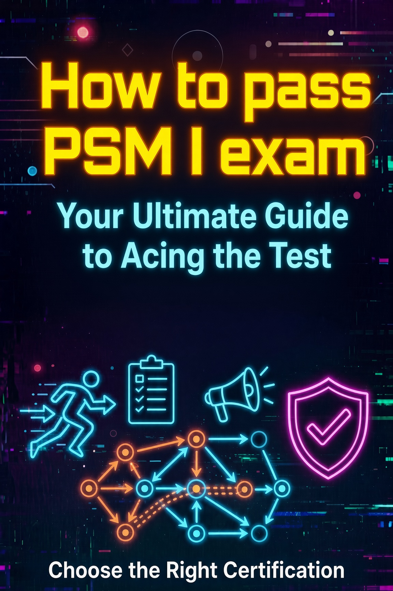

How to Pass the PSM I Exam: A Complete Study Guide

I took the Professional Scrum Master I (PSM I) assessment in 2026 and scored 100%. This guide is the exact plan I followed: what the exam tests, which parts of the 2020 Scrum Guide matter most, what the questions look like, and where people lose points for no good reason.
The PSM I is not a memorization test. It assesses whether you understand Scrum the way the Scrum Guide defines it. Nothing from your favorite blog is on the exam unless it also appears in the guide. That realization changes how you study, so it comes first.
PSM I Exam Format
The assessment is delivered online through Scrum.org. You get one attempt included with the $150 registration fee, and you can buy additional attempts at a reduced price if you do not pass the first time. Here are the facts you need before you book anything.
| Detail | PSM I Value |
|---|---|
| Number of questions | 80 |
| Time limit | 60 minutes |
| Passing score | 85% |
| Question types | Multiple choice (single answer, multiple answer, true/false) |
| Prerequisites | None. No training course required |
| Validity | Lifetime. No renewal, no continuing education units |
You have 45 seconds per question on average. Because the passing score is 85%, you can miss 12 questions and still pass. That margin is your strategy: when a question takes too long, flag it, pick your best answer, move on, and return to it at the end. Never leave a question unanswered. A wrong answer and a blank answer cost the same.
Why the 2020 Scrum Guide Is the Only Source You Need
Scrum.org builds every PSM I question from the Scrum Guide. The current version, published in November 2020, is about thirteen pages of dense, carefully worded prose. Read it twice and you have covered most of the exam content. The common failure mode is studying someone else's summary of Scrum instead of the guide itself, then discovering the summary was wrong about a detail the exam happens to test.
Study tip: Read the 2020 Scrum Guide once without notes to get the overall structure. Read it a second time with a highlighter, marking every word that describes accountability, timebox, or commitment. Those words are the exam.
Pay special attention to the sections most people skim: the definition of Done, the commitment for each artifact, and the language around who is accountable versus who is responsible. The exam rewards precise language, and the guide is precise.
Empiricism: The Most-Tested Concept on PSM I
Scrum rests on empiricism, the idea that knowledge comes from experience and decisions are made from what is known. The exam returns to this foundation constantly. If you understand why Scrum is designed the way it is, most questions answer themselves even in scenarios you have never seen.
Empiricism has three pillars:
- Transparency: significant aspects of the process must be visible to those responsible for the outcome. Hidden work, hidden progress, and hidden definitions of done all break transparency.
- Inspection: Scrum users must frequently inspect artifacts and progress toward goals to detect undesirable variance. Inspection without adaptation is pointless, which is why the third pillar matters.
- Adaptation: if any aspect of a process deviates outside acceptable limits and the resulting product is unacceptable, the process or the material being produced must be adjusted as quickly as possible to minimize further deviation.
A common exam pattern gives you a scenario with a problem, then asks what the Scrum Team should do first. The answer almost always flows from empiricism: make the problem visible (transparency), look at the actual evidence (inspection), then adjust the plan or the process (adaptation). Answer choices that skip straight to "redo the entire plan" or "schedule more meetings" are almost always wrong.
The Three Accountabilities
The 2020 Scrum Guide replaced the old "roles" language with accountabilities. This is not cosmetic. The exam will test whether you know who is accountable for what, and the precise wording matters.
| Accountability | What the Guide Says |
|---|---|
| Product Owner | Accountable for maximizing the value of the product resulting from the work of the Scrum Team. Owns the Product Backlog and the Product Goal. |
| Scrum Master | Accountable for establishing Scrum as defined in the Scrum Guide. Helps everyone understand Scrum theory, practice, rules, and values. Leads, trains, and coaches the organization and the Scrum Team. |
| Developers | Accountable for creating a usable Increment each Sprint. Owns the Sprint Backlog and the Sprint Goal. A cross-functional group with all the skills needed to create the Increment. |
Note what is not in that table: there is no Project Manager, no Team Lead, and no hierarchy inside the Scrum Team. The Developers are a single accountability even though they are a group of people. A question that tries to make one Developer the boss of the others is testing whether you know that Scrum has no sub-teams within the Scrum Team.
The Five Events and Their Timeboxes
Every event in Scrum is a formal opportunity to inspect and adapt an artifact. The exam asks about timeboxes constantly, and the numbers are easy to memorize if you learn them as a set.
| Event | Purpose | Timebox (one-month Sprint) |
|---|---|---|
| Sprint | Container for all other events. A Sprint is a month or less, and a new Sprint starts immediately after the previous one ends. | 1 month or less |
| Sprint Planning | Team collaborates on what the Sprint will deliver and how the work will happen. Produces the Sprint Backlog and the Sprint Goal. | 8 hours |
| Daily Scrum | Developers plan the next 24 hours of work, inspect progress toward the Sprint Goal, and adjust the Sprint Backlog as needed. | 15 minutes |
| Sprint Review | Scrum Team and stakeholders inspect the Increment and adapt the Product Backlog. Results are presented, and the Product Backlog is adjusted based on feedback. | 4 hours |
| Sprint Retrospective | Scrum Team inspects how the last Sprint went with regard to individuals, interactions, processes, tools, and Definition of Done, then plans improvements. | 3 hours |
Timeboxes scale down for shorter Sprints. A two-week Sprint gets a four-hour Sprint Planning session, a two-hour Sprint Review, and a ninety-minute Retrospective. The exam tests the one-month baseline values and the rule that the Sprint can never be longer than a month.
Two details trip people up. First, the Sprint ends when the timebox ends, not when the work is finished. Second, the Sprint Review is where stakeholders participate and the Product Backlog gets adjusted. The Retrospective is internal to the Scrum Team. Mixing those two up is one of the most common PSM I mistakes.
Artifacts and Their Commitments
The 2020 Scrum Guide made a structural change that the exam tests heavily: each artifact now has a commitment. The commitment is the promise the artifact makes, and the pairings are exact.
| Artifact | Commitment |
|---|---|
| Product Backlog | Product Goal |
| Sprint Backlog | Sprint Goal |
| Increment | Definition of Done |
The Product Goal describes the future state of the product and is the long-term objective for the Scrum Team. The Sprint Goal is the single objective for the Sprint, created during Sprint Planning and owned by the Developers. The Definition of Done is the formal description of the state of the Increment when it meets the quality measures required for the product. A work item is not part of the Increment unless it meets the Definition of Done.
The definition of Done question pattern is worth knowing cold. If the organization has a standard definition of Done, all Scrum Teams must use it as a minimum. If the organization does not, the Scrum Team must create its own. And if a product has multiple Scrum Teams, they must make their definitions compatible. Any answer that treats the definition of Done as optional or as a personal preference is wrong.
What the Questions Actually Look Like
PSM I questions come in three formats. Multiple-answer questions tell you how many answers to select, so read that instruction carefully. True/false questions are usually more nuanced than they first appear. Here are four representative questions in the style of the real assessment.
Question 1 (single answer): Who is accountable for maximizing the value of the product resulting from the work of the Scrum Team?
Answer: The Product Owner. This is the exact wording from the Scrum Guide. The Product Owner is accountable, not merely responsible.
Question 2 (true/false): The Sprint Review is the event where the Scrum Team inspects itself and creates a plan for improvements to be enacted during the next Sprint.
Answer: False. That description matches the Sprint Retrospective. The Sprint Review inspects the Increment with stakeholders and adapts the Product Backlog.
Question 3 (multiple answer, choose two): Which two statements describe the Definition of Done?
Answer: It is the formal description of the state of the Increment when it meets quality measures, and if the organization lacks a standard, the Scrum Team creates one. The distractors usually claim the Product Owner alone defines it, or that the team can change it mid-Sprint to fit leftover work.
Question 4 (single answer): The Developers decide to extend the current Sprint by two days to finish the work they committed to. What is the correct response?
Answer: A Sprint cannot be extended. It ends when its timebox ends. This tests the timebox rule, and the "commitment means we must extend" logic is a deliberate trap.
A Study Plan That Works
You can pass the PSM I in two to four weeks of focused study. Here is the sequence I used, in order.
- Read the 2020 Scrum Guide twice. First pass for structure, second pass with a highlighter on accountabilities, timeboxes, and commitments.
- Take the free Scrum Open assessment on Scrum.org. It is a small subset of PSM I style questions. Take it repeatedly until you score 100% consistently. It is free, and you can take it as many times as you want.
- Practice under time pressure. Buy the paid Open Assessment or use a practice question set, and complete 80 questions in 60 minutes. The time constraint is real, and the only way to feel comfortable with 45 seconds per question is to practice under it.
- Review every miss. For each wrong answer, find the exact sentence in the Scrum Guide that settles the question. If the guide does not cover it, the question was probably testing a misinterpretation, and the correct logic is to return to the guide.
- Write out the framework from memory. Blank page, draw the Sprint cycle, list the five events with timeboxes, the three accountabilities, and the artifact-commitment pairs. If you can reproduce the framework without looking, you know it.
On exam day, budget your time in blocks. Check the clock at question 20, 40, and 60. If you are falling behind, pick answers faster and flag the hard ones. The 85% pass rate means you have room to miss twelve questions, so do not burn ten minutes trying to perfect question seven.
Common Mistakes to Avoid
Memorizing answers instead of the framework. The exam scenarios are novel. If you studied answer keys instead of understanding why the answer is correct, you will fail the scenario-based questions.
Assuming Scrum means the same thing as your company's process. Most organizations run a customized version of Scrum. The exam tests the Scrum Guide, not your company's tweaks. When in doubt, the guide wins.
Giving the Product Owner too much or too little. The Product Owner owns the Product Backlog and ordering. The Product Owner does not assign tasks to Developers, does not attend the Daily Scrum by default, and does not decide the Definition of Done alone.
One more mistake deserves its own callout because it costs people the most points: answering from habit instead of the question's exact wording. Questions about the Sprint Review, the Retrospective, and the Daily Scrum look similar at a glance. Read every question fully before answering, and treat the words "accountable," "responsible," "must," and "can" as the most important words on the screen.
Final Checklist Before You Take the Exam
Checklist: Can you list the three pillars of empiricism? Can you name the five Scrum values (courage, focus, commitment, respect, openness)? Can you pair every artifact with its commitment? Can you state the one-month Sprint timeboxes for Planning, Daily Scrum, Review, and Retrospective? Can you explain why the Sprint ends on time regardless of unfinished work? If you can do all five from memory, you are ready.
The PSM I is a fair exam. It tests the Scrum Guide, nothing more and nothing less. Study the guide itself, practice under real time pressure, and answer from the framework rather than from memory. That combination took me from zero study to a 100% score, and it will work for you too.
Visualizing the Scrum Cycle
The diagram below shows how the five events fit inside the Sprint and how each artifact feeds the next. Keep this picture in your head during the exam and the event-based questions become much easier.
Ready to compare credentials before you commit? Read the PSM I vs CSM comparison to see how the Professional Scrum Master stacks up against the Certified ScrumMaster.